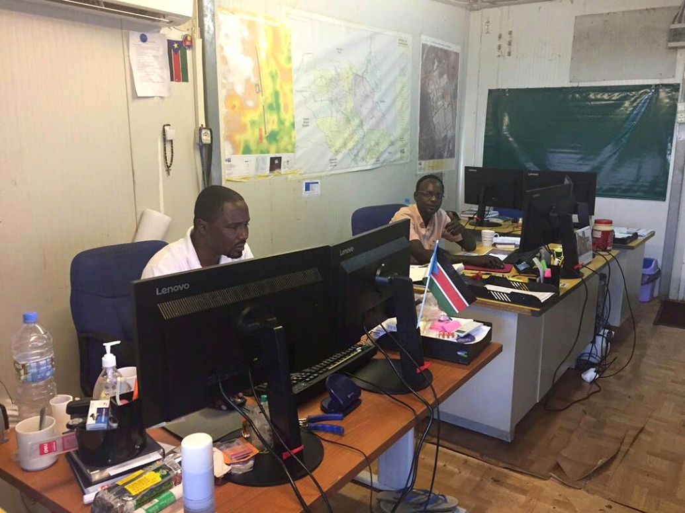
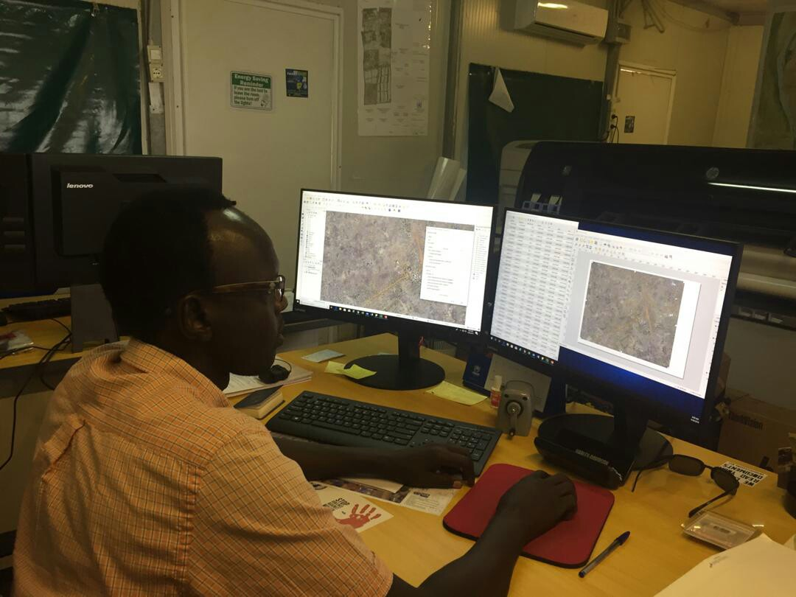
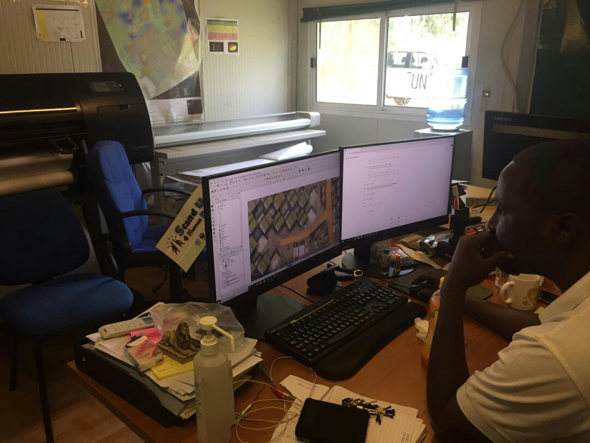

Best Practices
| Subject | [Best Practice] QGIS+ Malakal GIS Team in UNMISS |
|---|---|
| Name | UN Open GIS Secretariat |
| Date | 2019-10-24 |
| Views | 23,529 |
19 October 2019 | QGIS+ Malakal GIS Team in UNMISS
Mr. Akbar Amini, Mr. Remi Kouakou, Mr. Majur Achiew and Mr. Nabeil Natale from Malakal in UNMISS are using QGIS open source desktop software for their mission works.
Mr. Majur said that " I am working on Topographic Map around our base-camps using our imagery data and points generated in QGIS. My colleague Mr. Nabeil Natale is updating a 3D map of our camps (by using QGIS)" at the interview conducted by UN Open GIS Secretariat (26 September 2019).
 UNMISS| Malakal GIS Team.
 UNMISS| Mr. Majur Achiew is using 'QGIS' open source desktop software.
 UNMISS| Mr. Nabeil is updating a 3D map by using QGIS.
Reported by Eunhwa Kim, Secretariat of UN Open GIS on 19 October 2019.